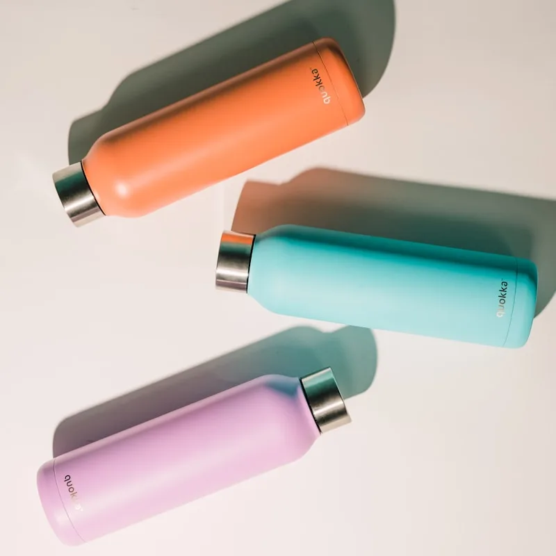
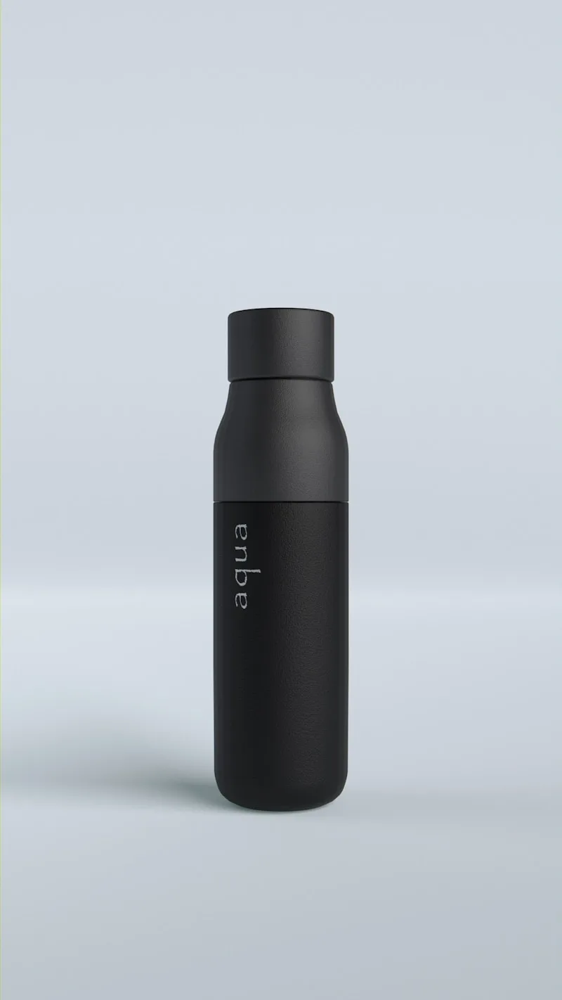
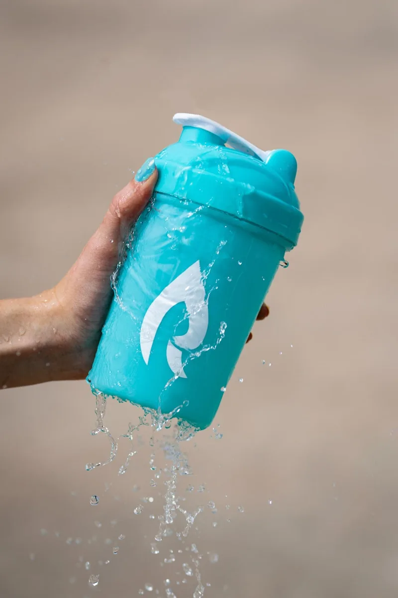
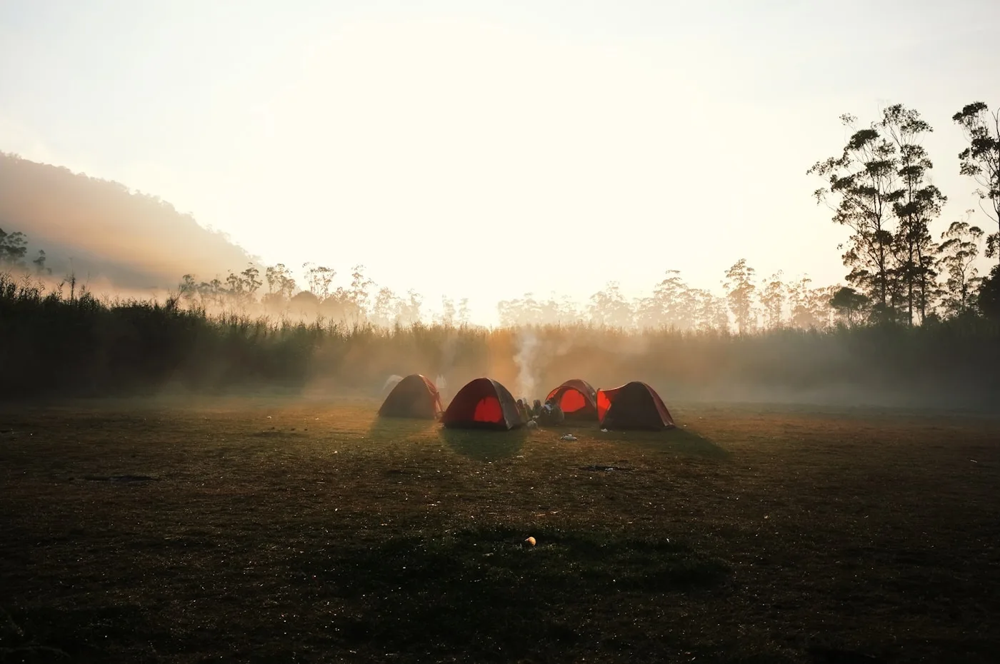

New

Trailhead 32oz
$48.00
Triple-insulated stainless steel. Drinks ice-cold for 36 hours, piping hot for 18. Engineered for every summit, every shoreline, every season.
Triple-wall vacuum, full day in the sun.
Same wall, same seal, other direction.
Heat, cold and impact before it ships.
From the field, not from the office.
From dawn patrols to desert crossings — pick the gear made for your next chapter.




SUMMIT was born on a ridgeline at 11,000 feet, when a cheap bottle froze solid before noon. We took it home, took it apart, and built something better. Today every bottle is pressure-tested through 40 cycles of heat, cold, and impact before it leaves the line.
Built by people who actually use it. Backed by a lifetime promise.
Read The StoryEvery detail tested in the field. No shortcuts, no plastic taste, no compromise.
Triple-wall vacuum insulation locks ice solid through a full day in the sun.
Restaurant-grade steel. No leaching, no rust, no metallic aftertaste — ever.
If it fails for any reason, we'll replace it. No receipts, no questions, no fine print.
Every SUMMIT replaces ~1,200 single-use plastic bottles in its lifetime.
"Dropped it down a scree field in the Tetons. Came back with three new dents and ice water still inside. This thing is unreal."
"I've owned six 'premium' bottles. This is the only one my coffee doesn't taste weird in. The lid seal is perfect too."
"I've taken this through 11 countries. It just works. Insulation is real, lid is bombproof, and the matte finish still looks new."